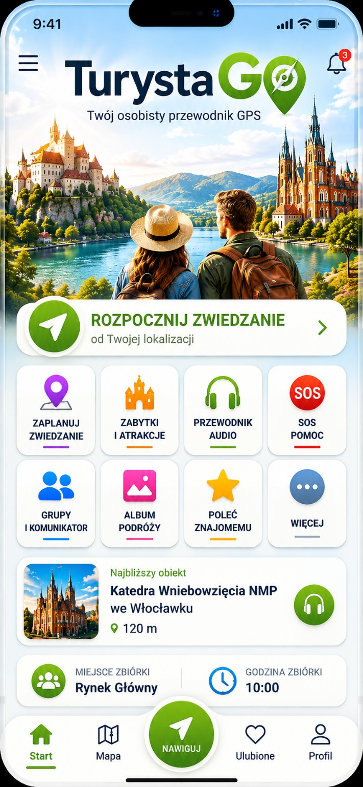

Wybierz miejsce rozpoczęcia, czas oraz atrakcje.
Tutaj przejdziemy do przygotowanego planu i trasy.
Tutaj pojawią się komunikaty TurystaGo.
TurystaGo może wykorzystać GPS do prowadzenia po przygotowanej trasie.
TurystaGo będzie wyszukiwał interesujące miejsca w pobliżu.
Tutaj będą odtwarzane opowieści i efekty dźwiękowe TurystaGo.
W przyszłości tutaj znajdą się najważniejsze numery alarmowe i funkcje bezpieczeństwa.
Funkcja grup turystycznych będzie rozwijana w kolejnym etapie.
Tutaj będą zapisywane pamiątki z podróży.
Udostępnij TurystaGo znajomym.
Kolejne funkcje TurystaGo będą dodawane tutaj.
📍 TurystaGo będzie wykorzystywać GPS do określania najbliższych obiektów.
Godzina zbiórki: 10:00
Mapa główna aplikacji.
Nie masz jeszcze zapisanych miejsc.
Tutaj znajdą się ustawienia użytkownika, języka i konta.